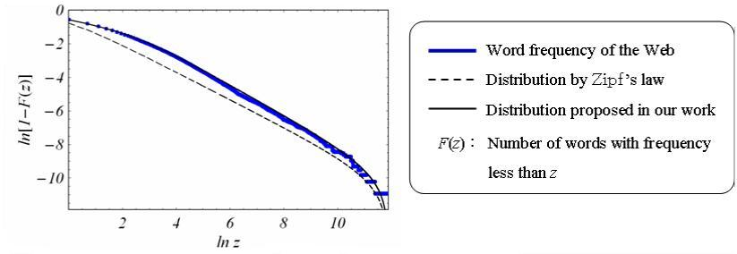

Webやデジタルシティでは，個々の利用者がハイパーメディアによるページ作成・閲覧を非同期・独立に行うことにより，不特定の利用者間で異なる情報が多重並行的に伝達される．このとき，各ページでの情報表現の仕方はページの作成者毎に異なり，そこから読み取られる情報もページの閲覧者による解釈の仕方によって異なる．さらに，そのような情報表現・解釈の仕方は，情報伝達過程を通じて相互に影響し合い，次第に変化していく．
このような状況での情報表現の性質を明らかにするため，記号論を導入して情報表現のダイナミクスをモデル化した．記号論は，情報の送受信者を明示的に仮定せず，情報表現としての記号の機能を議論するものであり，その際に同一対象が異なる記号として多様な意味を生成することを前提としているため，上のような情報表現のモデル化に適している．そこで，情報表現・解釈の仕方を記号体系と考えることにより，情報表現のダイナミクスを，異なる記号体系間の動的相互作用に基づく自己組織化システムとしてモデル化した．
上のシステムは，同じ意味を生成する記号の分布が時間と共に拡散する性質を持つことから，これを熱力学の拡散方程式を用いて記述し，記号分布が最終的にある種の指数分布に従うことを数学的に導いた．この分布は，Zipfの法則で知られるある種のべき乗分布に比べ，実際のWebページの単語の出現頻度を統計的に良く近似する一方，情報表現の多様性が十分低い場合はZipfの法則に一致することから，単一著者による文書中の単語の出現頻度を良く近似するZipfの法則を，多様な情報表現が混在する場合に拡張するものといえる．

図１．Webデータとの比較
文献：
Victor V. Kryssanov, Koh Kakusho, Yevgeny. L. Kuleshov and Michihiko Minoh. Modeling hypermedia-based communication. Information Sciences.
連絡先：
京都大学 学術情報メディアセンター 角所考 kakusho@media.kyoto-u.ac.jp